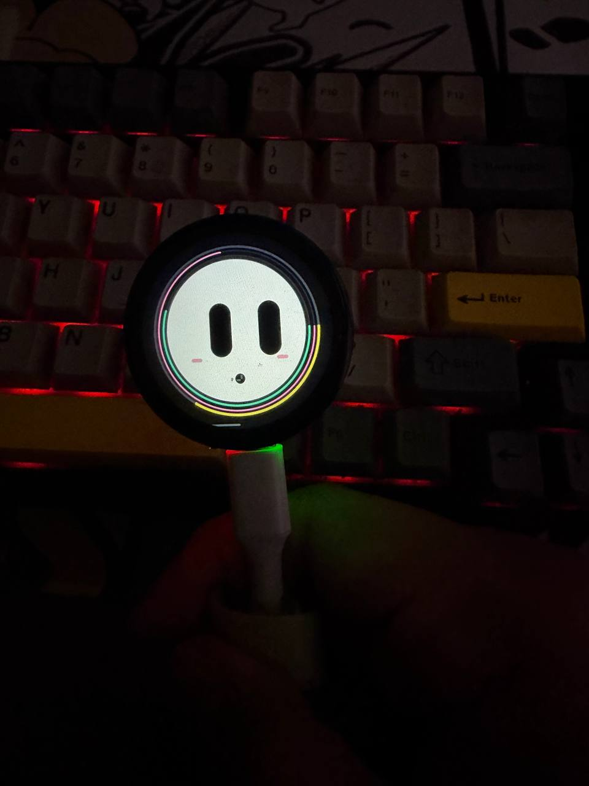
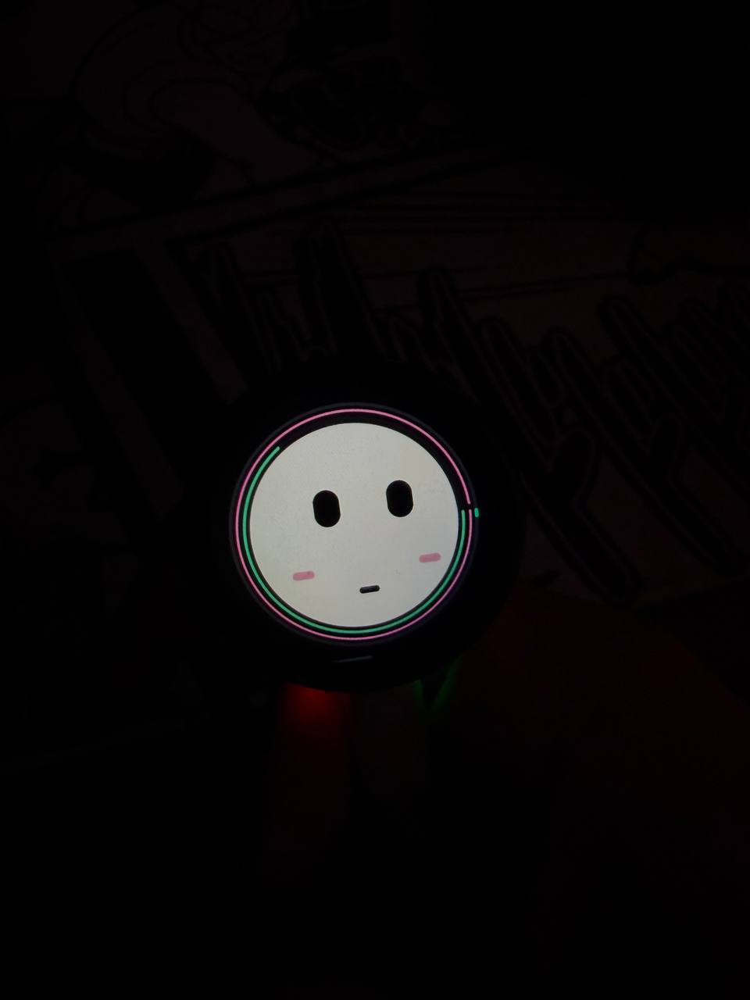
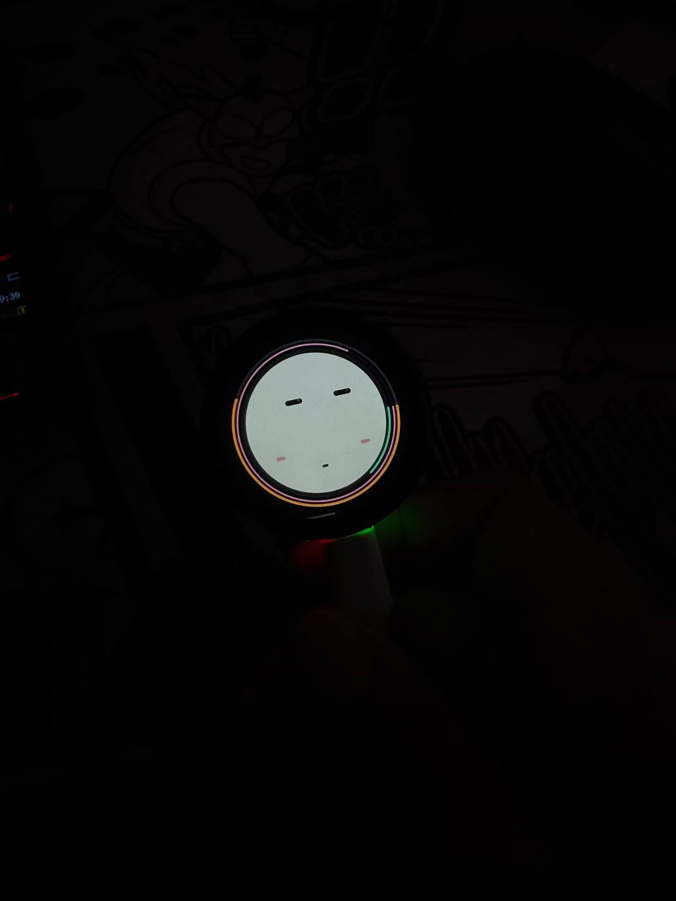

A face, not a feed.
Expressions and small animations make the device feel present, not like another app to open.
Meet FUMI — a tiny desktop companion you can actually talk to. Built on real hardware, with a touch display, microphone, speaker, and a working end-to-end voice loop.

FIG. 01 FUMI / UNIT 001I wanted to build an AI companion that lives somewhere in the real world — with a face, a body, and the limitations that make hardware interesting.
FUMI started as a hands-on experiment: make a small device feel responsive and expressive, then get the whole voice loop working from a tiny board to a remote AI brain and back out through a speaker.
See how it works ↘Expressions and small animations make the device feel present, not like another app to open.
Press to talk, let the AI process the request, then hear the response from the device itself.
Firmware, backend, setup notes and demos are in the repo. Fork it and make it your own.
FUMI runs on a Waveshare ESP32-S3 touch display. The firmware handles the face, animations and touch interactions while the backend handles the heavier AI work.

HARDWARE STUDY / 001
EXPRESSIONS / 002The full voice path is working end-to-end.
FUMI records audio, sends it to speech-to-text, passes the request to the AI backend, then turns the response into speech through its speaker.
The interesting part isn't just connecting an LLM. It's making the entire experience feel snappy on constrained hardware.
Keep the face responsive while the brain is somewhere else.
The repository includes firmware, backend code, hardware notes, setup scripts and demo assets. Start with what works, inspect the rough edges, and build a version that feels like yours.